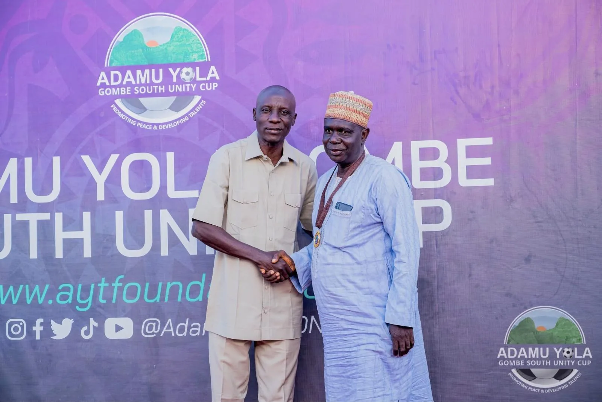
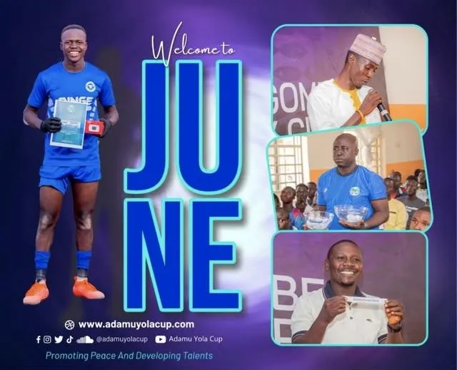
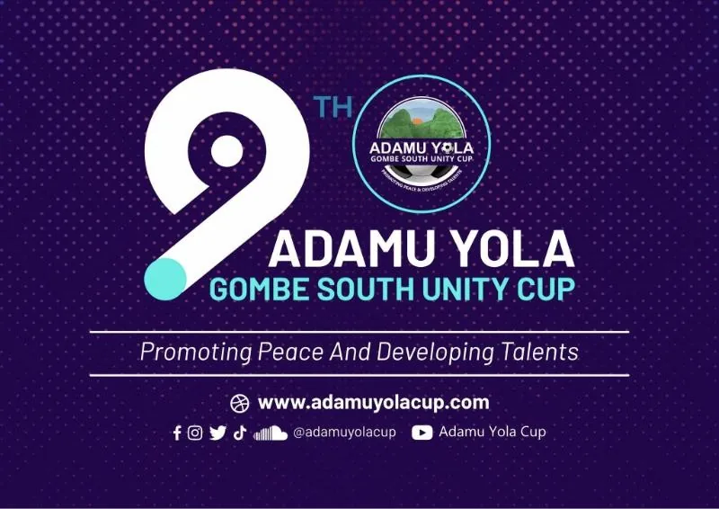
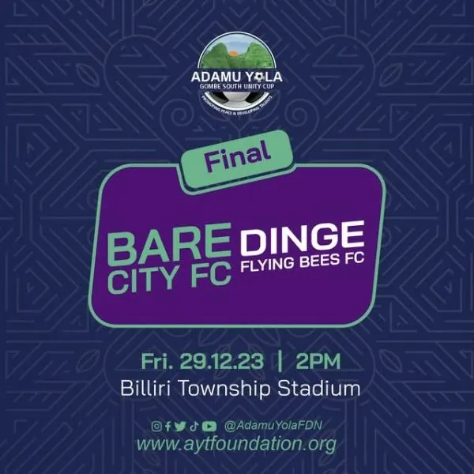
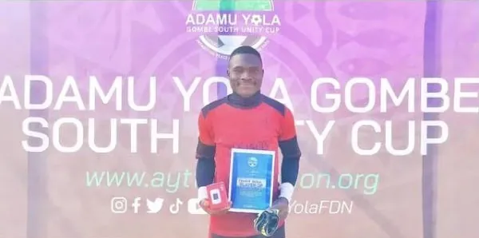
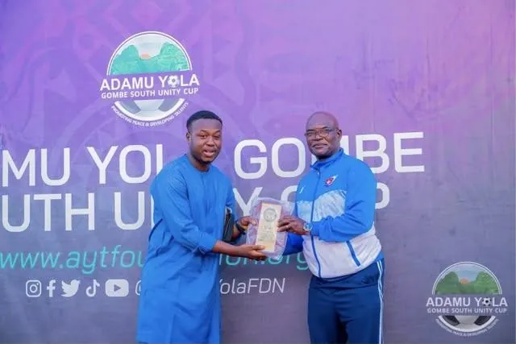
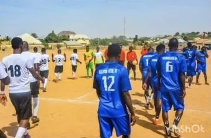
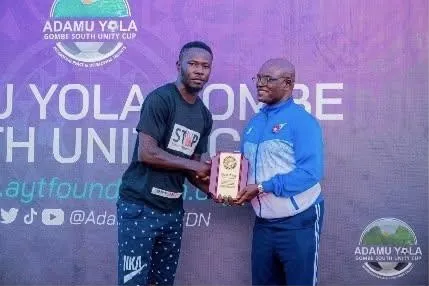
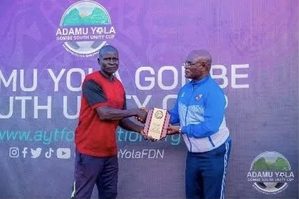

News and announcements.
Results, partnerships and updates from the Unity Cup and the foundation’s wider work, with links to the original reports.

9th Unity Cup: All Stars FC win the final
All Stars FC of Kaltungo overcame Oska FC in the January 2026 final, closing the ninth edition of the Gombe South Unity Cup.
Marker Beyond Border
Unity Cup draw and awards season
The foundation marked June with highlights from the Unity Cup draw and the recognition of standout players and officials.
Instagram @adamuyolafdn
9th Unity Cup: registration opens for up to 64 clubs
The organising committee set a registration deadline and a maximum of 64 clubs for the ninth edition.
Independent Newspaper
Bare City FC and Dinge Flying Bees FC contest the final
The final was played at Billiri Township Stadium, with FC Leon and All Stars FC Kaltungo meeting earlier the same day for third place.
Instagram @adamuyolafdn
Zakari Akawu saves two penalties in the semi-final
Bare City FC goalkeeper Zakari Akawu was named Player of the Match as his saves sent his side to their second final in four years. He also won the Save Hand award of the 5th edition.
Instagram @adamuyolafdn
8th Unity Cup: Amana FM named broadcast partner
The local organising committee announced Amana FM as official radio partner, bringing match coverage to listeners across the region.
Adamu Yola Foundation
7th Unity Cup: Kaltungo Boys are champions
Kaltungo Boys defeated Komta United to win the 2022 edition.
Jewel Sport
18 Unity Cup stars invited to a closed camp in Abuja
Eighteen players shortlisted from the sixth tournament earned invitations to a closed camp, a step from community football towards wider opportunity.
Sports247North-East Elite Basketball Camp
A development camp for young athletes from across the North-East, held in collaboration with the Jordan Nwora Foundation.
Sports247
5th Unity Cup: SportVote partnership
A partnership with SportVote set out to raise the visibility of grassroots players beyond Gombe South.
FutbalovenTure Ward: 200 bags of fertiliser for farmers
An agricultural empowerment initiative distributed 200 bags of fertiliser to farmers in Ture Ward, Kaltungo West.
Adamu Yola Foundation